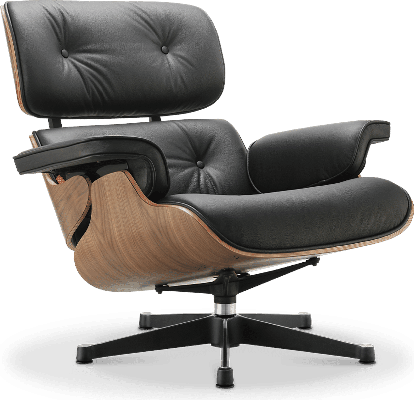
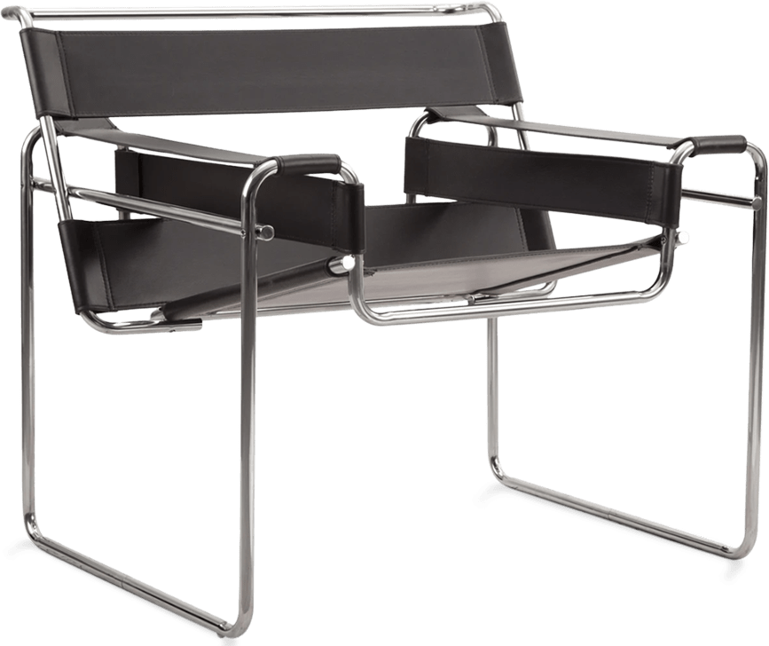
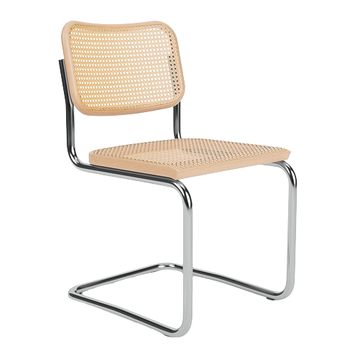
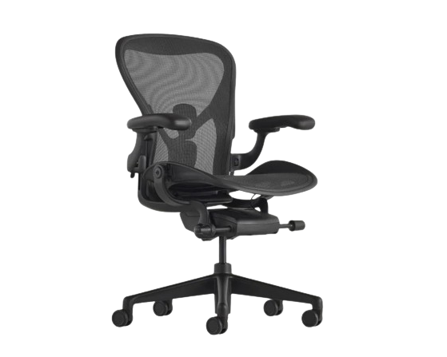

Lately I've been very into cool chairs. Here are some of my favorites, enjoy your stay and learn some cool facts.

Eames Lounge 1920, Ray and Charles Eames
Inspired by a baseball mitt
Debuted on national TV in 1956 on NBC's "Home,"
Part of MoMA and Art Institute collections
also i got one of these haha

Wassily Chair 1925, Marcel Breuer
Inspired by the frame of a bicycle and influenced by the constructivist theories of the De Stjil movement
Marcel Breuer was still an apprentice at the Bauhaus when he designed the chair
A club chair reduced to its rawest lines and planes

Cesca Chair 1928, Marcel Breuer
Marries traditional craftsmanship with industrial methods and materials
Offered in arm and armless versions with a fully upholstered seat and back, or with hand-woven cane inserts.
The design was named as a tribute to Breuer's adopted daughter Francesca (nicknamed Cesca).

Aeron Chair 1994, Bill Stumpf and Don Chadwick
Pioneering in both ergonomics and material innovation, thanks to its proprietary breathable textile known as Pellicle.
the Aeron has a mesh seat that conforms to your bottom
Part of MoMA and Art Institute collections
also i got one of these haha
Site made by Victor Romanko for Handmade Web 2024